Start here
Quick start: a simple Push · Legs · Pull, set up in ten minutes
No phases, no percentages, no deload calendar: three sessions a week, five exercises each, a few sets in a rep range, and the same week again while the weights climb. A plan most people can start today and keep for months, set up in TrainingPlanner in about ten minutes, for free.
Who it's for
Anyone starting out, coming back after a break, or wanting a plan that works without much thought: three sessions a week of about 50 minutes, in a gym with a barbell, dumbbells, a cable station and a few machines. Each day has one job. Push trains the chest, shoulders and triceps; Legs the thighs, hips and calves; Pull the back, the rear of the shoulders and the biceps. Every muscle is trained hard once a week, and every session is followed by a day off.
It isn't periodized: no phases, no planned heavy and light weeks, no percentages of a max. The same week repeats, and you progress by doing a little more than last time. That's all a new lifter needs, often for a year or more. Periodization pays off later, when progress slows.
The plan
Push on Monday, Legs on Wednesday, Pull on Friday: or any three days with a day between them.
- Day 1Push
- Day 2Rest
- Day 3Legs
- Day 4Rest
- Day 5Pull
- Day 6Rest
- Day 7Rest
| Exercise | Sets | Rest | Progression and notes |
|---|---|---|---|
| Bench press | 4 × 8–12 | 2 min | Double progression, +2.5 kg |
| Seated DB shoulder press | 3 × 8–12 | 90 s | Double progression, +2.5 kg |
| Incline DB press | 3 × 8–12 | 90 s | Double progression, +2.5 kg |
| DB lateral raise | 3 × 12–15 | 60 s | Double progression, +2.5 kg |
| Rope pressdown | 4 × 10–15 | 60 s | Double progression, +2.5 kg |
| Exercise | Sets | Rest | Progression and notes |
|---|---|---|---|
| Back squat | 3 × 8–12 | 2 min | Double progression, +2.5 kg |
| Romanian deadlift | 3 × 8–12 | 2 min | Double progression, +2.5 kg |
| Leg press | 3 × 10–15 | 90 s | Double progression, +2.5 kg |
| Lying leg curl | 3 × 10–15 | 60 s | Double progression, +2.5 kg |
| Standing calf raise | 4 × 12–15 | 60 s | Double progression, +2.5 kg |
| Exercise | Sets | Rest | Progression and notes |
|---|---|---|---|
| Lat pulldown | 4 × 8–12 | 90 s | Double progression, +2.5 kg |
| Seated cable row | 3 × 8–12 | 90 s | Double progression, +2.5 kg |
| Face pulls | 4 × 12–15 | 60 s | Double progression, +2.5 kg |
| EZ-bar curl | 3 × 8–12 | 60 s | Double progression, +2.5 kg |
| Hammer curl | 3 × 10–15 | 60 s | Double progression, +2.5 kg |
- A rep range for every exercise. 8 to 12 reps on the big lifts, more on the small ones, where a heavy weight strains a joint before it trains the muscle.
- Rest two minutes after the bench press, the squat and the Romanian deadlift, 60 to 90 seconds after the others. The rest timer runs by itself after each set.
- How hard. End each set with one to three reps left in you, RPE 7 to 9. Grinding every set to failure doesn't build more muscle; it makes the next session worse. See RPE and RIR.
- Warm up with a few lighter sets before the first heavy lift. When the first set is 30 kg or more, the workout suggests a ramp of three: warm-up sets.
Where the work goes
| Muscle | Work sets a week |
|---|---|
| Chest | 7 |
| Back | 7 |
| Shoulders | 6 |
| Biceps | 6 |
| Quads | 6 |
| Hamstrings | 6 |
| Glutes | 6 |
| Rear delts | 4 |
| Triceps | 4 |
| Calves | 4 |
Six or seven hard sets a week for each big muscle, four for the small ones. That's the low end of what muscles grow on, and it's on purpose: new lifters grow on fewer sets, and a plan you recover from is a plan you keep doing. It matches the Lower weekly ranges in Settings, the ones setup gives someone new to lifting; with the usual ranges, the board's sets per muscle calls most of these muscles under. More on counting sets in effective sets and weekly volume.
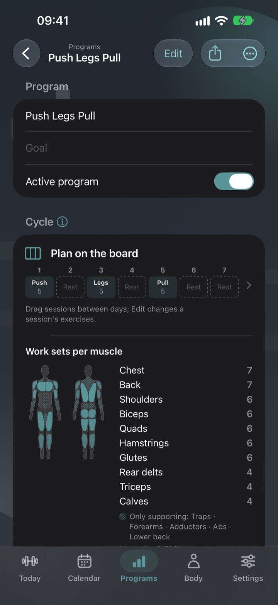
Set it up in TrainingPlanner
The plan is a repeating plan: one week, planned once, that repeats until you change it. That's free, with everything you need to follow it: logging, the rest timer, the calendar, Apple Health and the Apple Watch.
1. Open the app and skip the setup for now
- Open TrainingPlanner. The welcome offers three ways on: find a program with two questions, browse all thirty, or later.
- Below the choices, check the units: kilograms or pounds, kilometres or miles.
- Tap Later: this plan you build yourself, in the next step.
If you'd rather have the app pick, Find my program asks your experience, goal and days and suggests a program that fits: see choosing a training split.
2. Make a repeating plan
- Open Programs, tap +, then Build My Own › Repeating Plan. (While Programs is empty, Build a Repeating Plan on the page does the same.)
- Name it: Push Legs Pull.
- Leave the cycle at 7 days, with sessions on days 1, 3 and 5: already picked for you.
- Tap Create and plan on the board. Three empty sessions wait there, A, B and C, on days 1, 3 and 5.
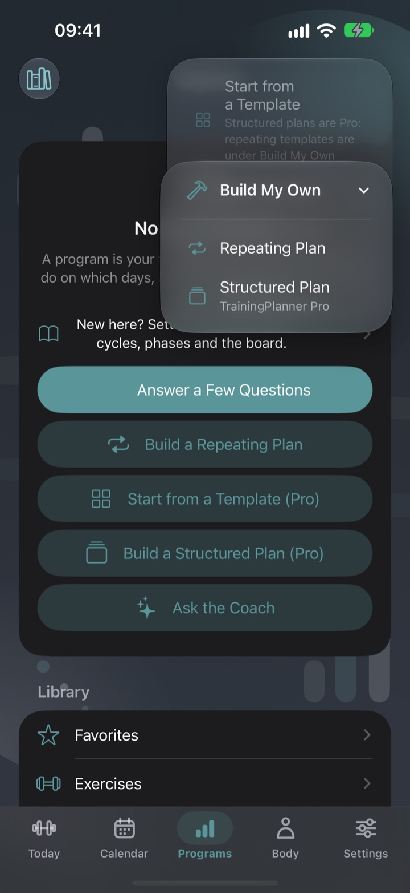
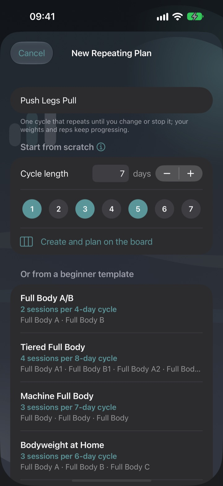
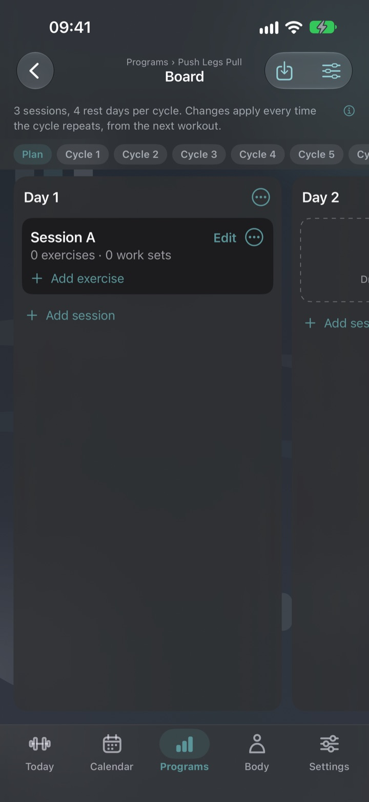
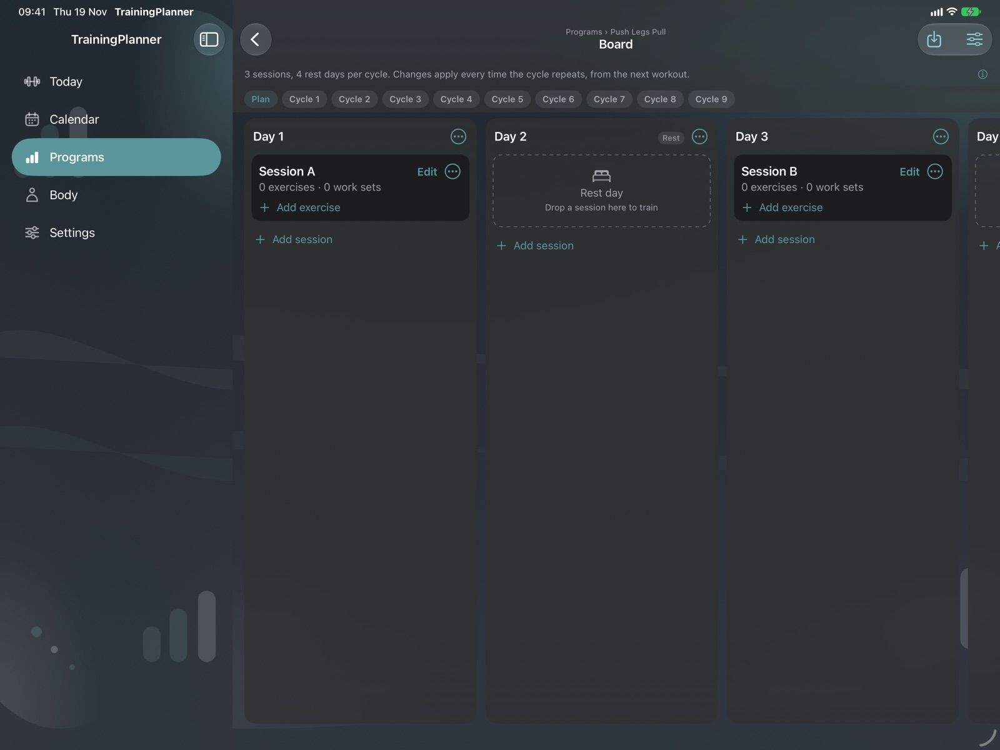
3. Name the sessions and add the exercises
- Tap Session A and name it Push. Go back to the board.
- Tap Edit beside Push, then Add exercise.
- Tap Exercise, search for the bench press, and pick it. A new exercise comes with three sets of 8 to 12: what most of this plan uses. Tap Save.
- Tap + on its card for a fourth set, where the table has four.
- Add the rest of the day the same way, then Done. For a different range, 12 to 15 on lateral raises, tap the exercise's Edit and then its sets.
- Do the same for Legs and Pull: Session B and Session C.
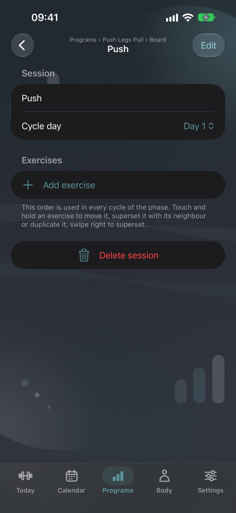
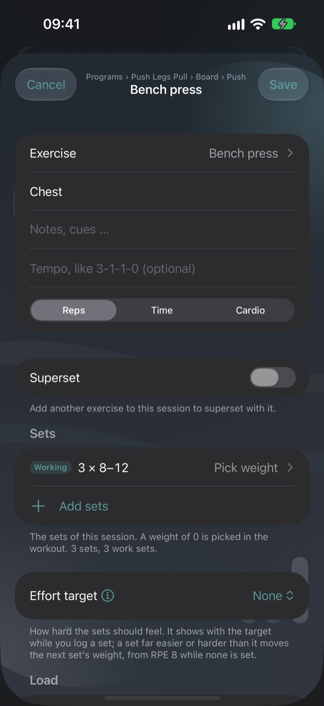
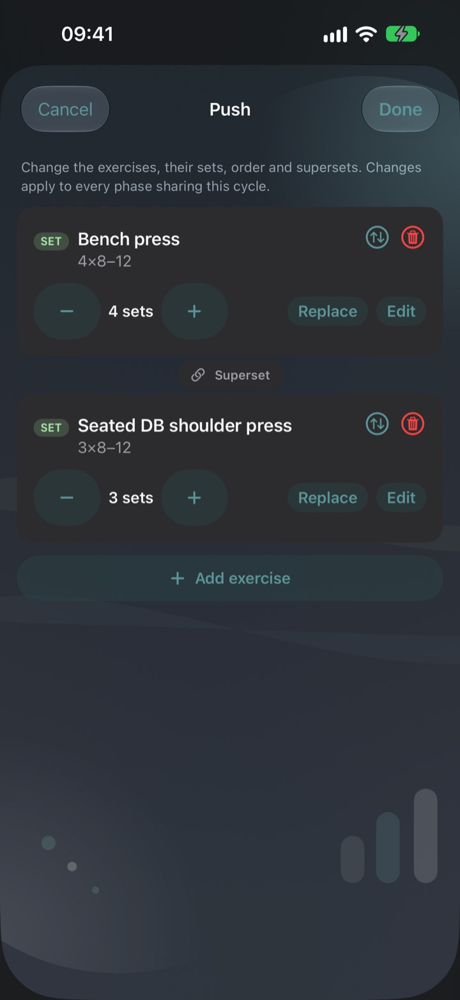
Leave the weights empty: you pick them in the first workout, from how the warm-up feels. From then on, every set starts from what you did last time.
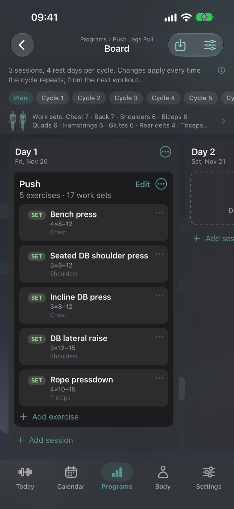
4. Your first workout
- On Today, tap Start program today. Day 1, Push, is today; the plan moves on from there.
- Tap Start beside Push.
- Warm up, then tap Start next set. Type the weight and the reps you got, and pick how hard it was; the plates for each side of the bar are worked out for you. Then Log set.
- The rest timer starts: two minutes for the bench press. The next sets are ready at the same weight.
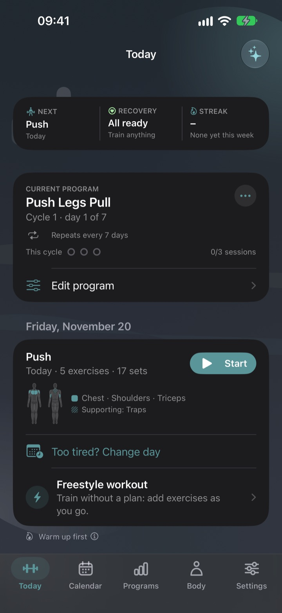
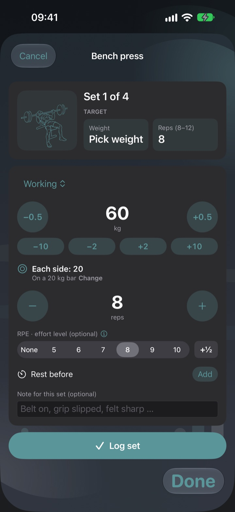
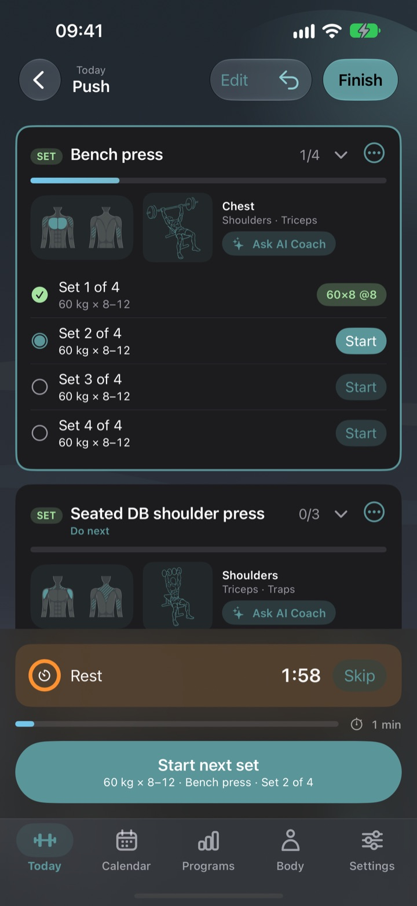
The first time, pick a weight you could lift for about 12 good reps and stop at 10: a little light is better than a little heavy. You'll know the right weights within two weeks.
The plan on iPad and Mac
The plan is the same everywhere you sign in with your Apple Account, through your own iCloud: plan on the iPad or the Mac, train with the iPhone or the Watch.
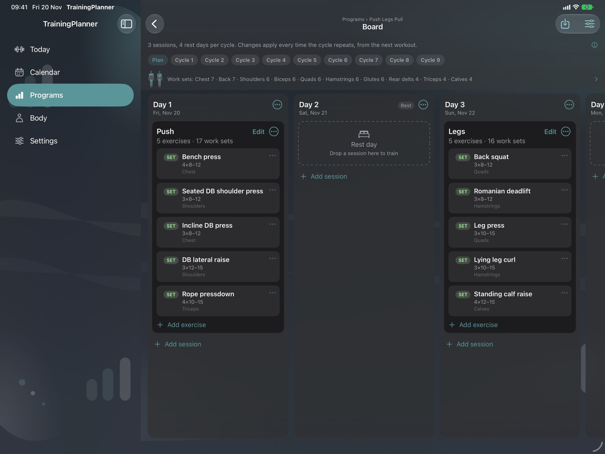
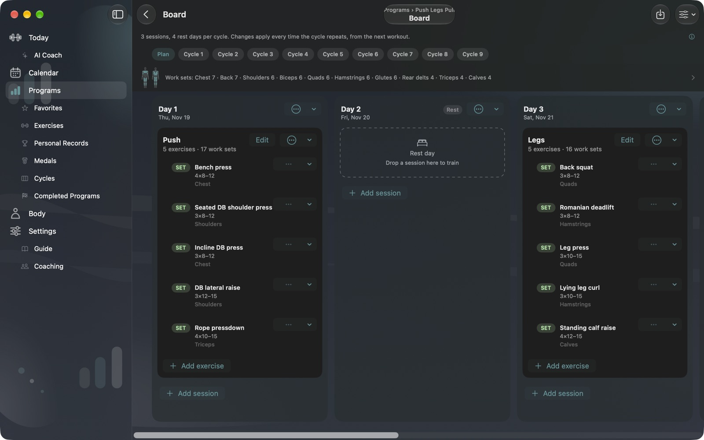
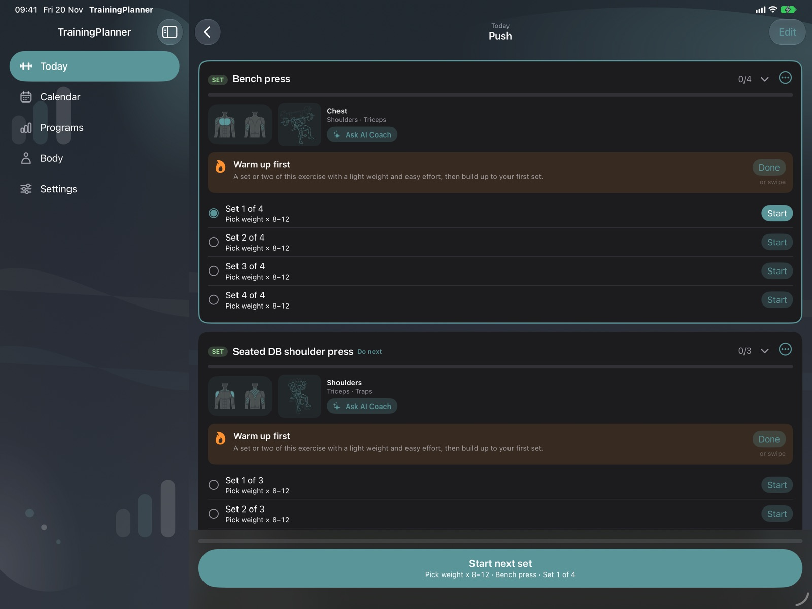
How it progresses
The plan climbs by double progression: add reps at the same weight until every set reaches the top of the range, then add weight and start again at the bottom.
- In the free app, every set starts from last time's weight and reps, and you do the climbing: a rep more where you can, and when all sets reach the top (12, 12, 12, 12 on the bench press), the next weight up: 2.5 kg on the barbell lifts, the next dumbbell, the next pin on a machine.
- With TrainingPlanner Pro, the plan does it for you. Each exercise is already set to double progression: the next target is one rep more than your weakest set, and the weight goes up by itself when every set is at the top. At the end of each week, Today shows a free user what it would have set.
Free or Pro. The whole plan is free to build and follow: a repeating plan, rep ranges, logging, the rest timer, warm-up sets, the plates for the bar, the calendar, Apple Health and the Apple Watch. Automatic progression and the next week's review are part of TrainingPlanner Pro.
When to change it
- An exercise doesn't suit you. Swap it for one that trains the same muscle: a leg press for the squat, a machine chest press for the bench, pull-ups for pulldowns. On the board, tap Edit and Replace.
- Every session feels easy to recover from, after a couple of months: add a set to the first two exercises of each day, one day at a time.
- You can train more often. The full Push · Legs · Pull program (Pro) runs the three days on a four-day cycle, Push, Legs, Pull and a rest day, so every muscle comes back every fourth day: five or six sessions a week, with top sets and two phases.
- Progress stalls for a few weeks in a row, with sleep and food in order: take a lighter week (a deload), then think about a structured plan.